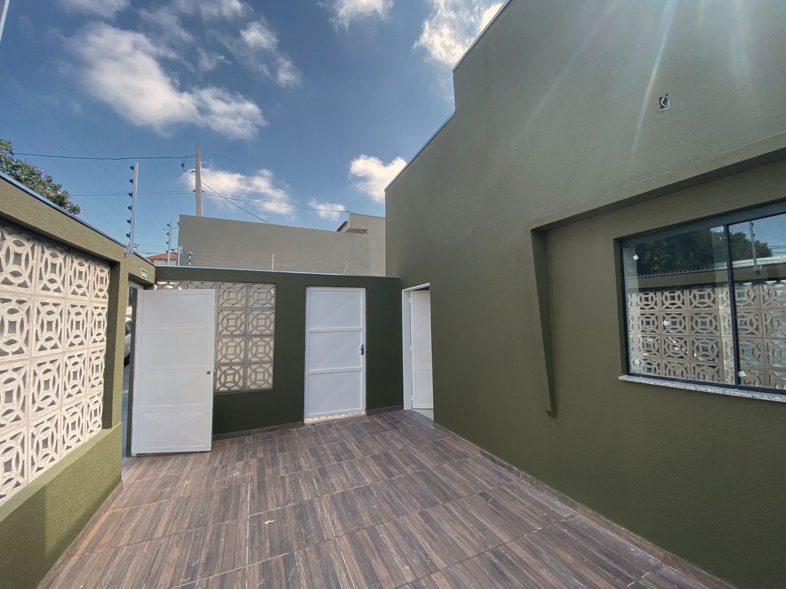
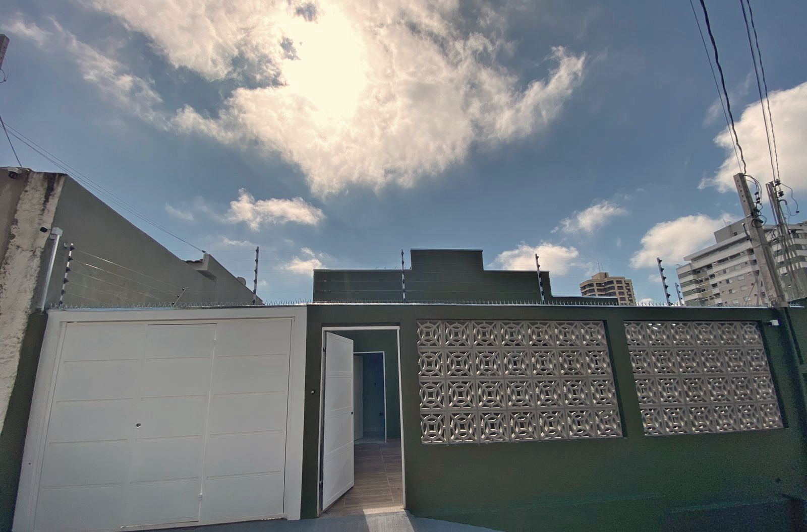
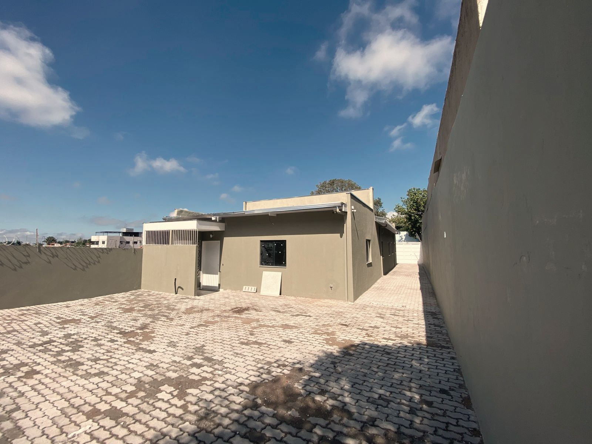
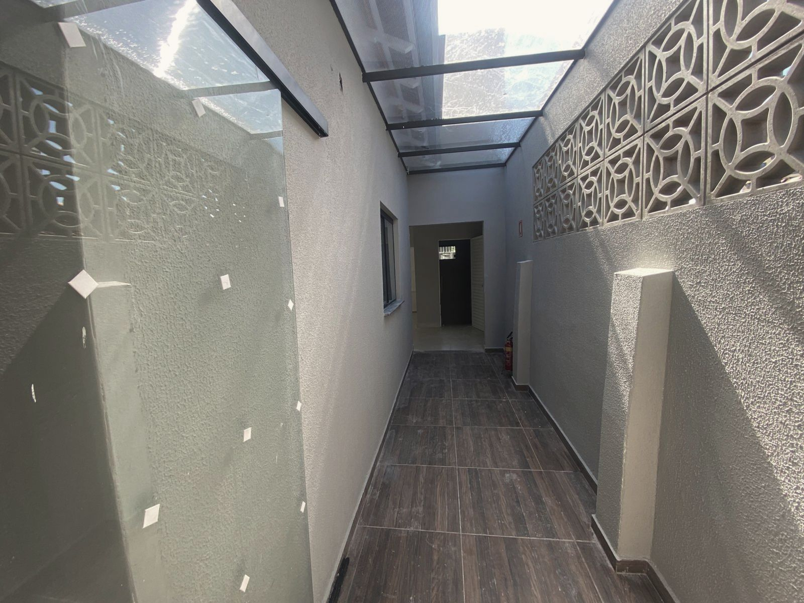

obras / comerciais
Salas comerciais

Uma casa virou salas comerciais, com projeto, regularização e habite-se.
Residência térrea convertida em seis salas para locação, com recepção, sala de espera, quatro sanitários, um deles acessível, e estacionamento para seis carros.
O trabalho foi a regularização com reforma, ampliação e mudança de uso: projeto legal, prevenção a incêndio, as built e laudo para o habite-se.
- Local
- Marília · SP
- Área construída
- 169,14 m²
- Terreno
- 484 m²
- Sistema
- Alvenaria de blocos de concreto
- Escopo
- Projeto legal, prevenção a incêndio, as built e laudo de habite-se
- Etapa
- Obra concluída · 2026
Fachada


Externas e circulação




